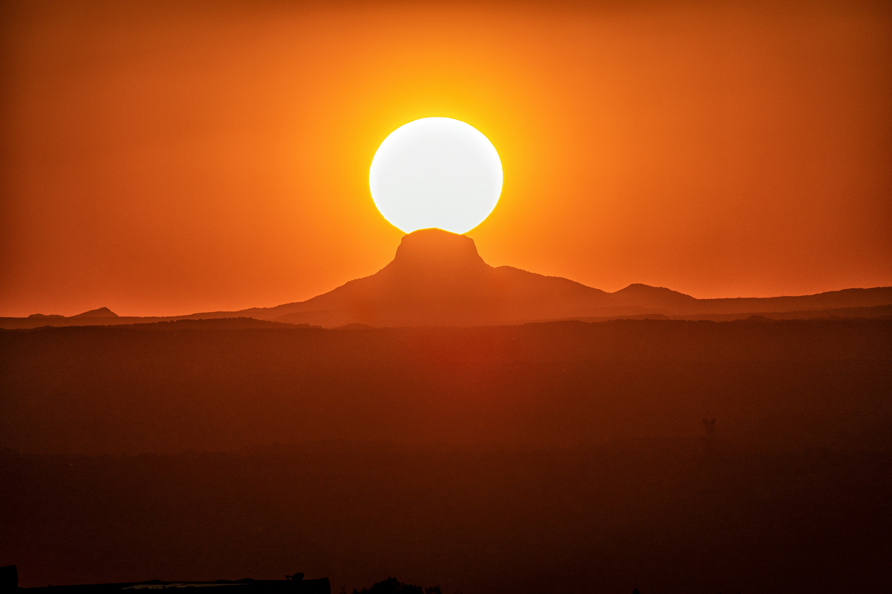
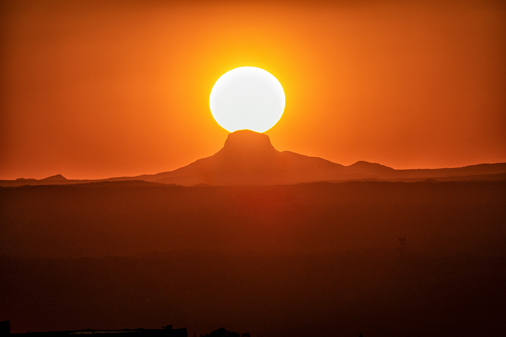

JPEG Quality 80
File size: ~XX KB
Good quality, moderate size

JPEG Quality 40
File size: ~XX KB
Lower quality, smaller size
GIF - 256 Colors
File size: ~XX KB
Full palette, okay for simple images
GIF - 64 Colors
File size: ~XX KB
Reduced colors, smaller file
GIF - 8 Colors
File size: ~XX KB
Very limited colors, smallest size
PNG-24
File size: ~XX KB
High quality, larger file


 
